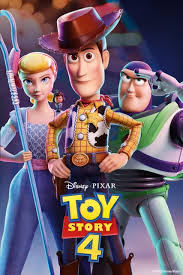

IMDb Pro Watch list Sign In
IMDb Pro Watch list Sign In

.png)
G | 1h 40min | Animation, Adventure, Comedy | 21 June 2019 (USA)
Toy Story 4 is a 2019 American computer-animated comedy film produced by Pixar Animation Studios for Walt Disney Pictures. It is the fourth installment in Pixar's Toy Story series and the sequel to Toy Story 3 (2010). It was directed by Josh Cooley (in his feature directorial debut) from a screenplay by Andrew Stanton and Stephany Folsom; the three also conceived the story alongside John Lasseter, Rashida Jones, Will McCormack, Valerie LaPointe, and Martin Hynes.[2] The film stars the voices of Tom Hanks, Tim Allen, Annie Potts, Tony Hale, Keegan-Michael Key, Jordan Peele, Madeleine McGraw, Christina Hendricks, Keanu Reeves, Ally Maki, Jay Hernandez, Lori Alan, and Joan Cusack.
The film directly follows Toy Story 3, as Sheriff Woody, Buzz Lightyear, and their other toy friends have found new appreciation living with Bonnie. They are joined by Forky, a spork that Bonnie has made into a toy, and embark on a road trip adventure. The film is dedicated to actor Don Rickles and animator Adam Burke, who died on April 6, 2017 and October 8, 2018, respectively.[8]:12[9]
Toy Story 4 premiered on June 11, 2019 in Los Angeles, California and was released in theatres in the United States on June 21, 2019, in RealD 3D, Dolby Cinema, and IMAX. The film has grossed $1.073 billion worldwide, becoming the highest grossing installment of the franchise, the fifth highest-grossing film of 2019, the 30th highest-grossing film of all time and the fifth highest grossing animated film of all time. Like its predecessors, Toy Story 4 received critical acclaim for its story, humor, emotion, score, animation, and performances.
Toy Story 4 grossed $434 million in the United States and Canada, and $639.4 million in other territories, for a worldwide total of $1.073 billion. The film had a worldwide opening of $244.5 million, the 46th highest ever and 3rd biggest for an animated film.[83] It crossed the billion dollar mark on August 13, 2019, becoming the 43rd film as well as the fourth Pixar film to ever do so.[84] It was also the fifth film released by Disney in 2019, and sixth overall, to cross the milestone, both records for a single year.
United States and Canada
Beginning on May 28, 2019, in its first 24 hours of pre-sales, Toy Story 4 set the records on Fandango for most tickets sold by an animated film in that frame (besting Incredibles 2), while Atom Tickets reported it sold nearly 50% more than the previous three highest-selling animated films combined did in their first day (Incredibles 2, Ralph Breaks the Internet and Hotel Transylvania 3: Summer Vacation).[86] The film opened alongside Child's Play and Anna, and was projected to gross $140–160 million in its opening weekend, with some predicting it could debut as high as $200 million. It played in 4,575 theaters, the second-most all-time behind Avengers: Endgame.[87][88] Toy Story 4 made $47.4 million on its first day, including $12 million from Thursday night previews, the second-highest amount for an animated film, behind Incredibles 2.[89] The film went on to debut to $120.9 million over the weekend, finishing first at the box office.[90][91][92] Although below projections, executives at Disney were satisfied with the debut, since it continued Pixar's "remarkable consistency" at the box office and showed "proof of audiences' long-time love for the Toy Story franchise."[93][94] Additionally, it was the best opening of the series, the biggest for a G-rated film and the fourth-highest of all-time for an animated film.[83][92][95][96] In its second weekend, Toy Story 4 made $59.7 million and retained the top spot at the box office.[97][98][99] It grossed $33.9 million in its third weekend, by which time it had been dethroned by newcomer Spider-Man: Far From Home.[100][101][102] In August 2019, the film surpassed The Lion King (1994, $422 million including re-releases), which held the title for the last 25 years (1994-2003 and 2011-2019) to become the highest-grossing G-rated film of all-time domestically.
Other territoriesThe film opened day-in-date with the U.S. in 37 countries (64% of its total market), and was projected to gross around $100 million abroad for a global debut of $260 million.[87] In China, where the film opened alongside a re-release of Spirited Away (2001), it was expected to debut to $15–20 million.[5] Through September 2, 2019, the film's largest markets were Japan ($90.1 million), the United Kingdom ($79.9 million, third highest all-time for an animated film), Mexico ($72 million), Brazil ($32.5 million), France ($29.2 million), China ($29.1 million), Argentina ($28.9 million), Australia ($28.9 million), and South Korea ($24.7 million).
Click here to go back..